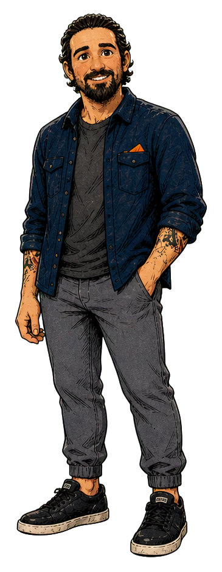

dustinOSLOCAL PLAYGROUND09:41

GOOD MORNING, DUSTINLet's do
a little less.
Your desk. Your pace.
Coffee is already deployed.
All systems mostly caffeinated.
No actual work will be harmed in the making of this game.● SIMULATION
Click an icon on the monitor. Click the mug for the important work.